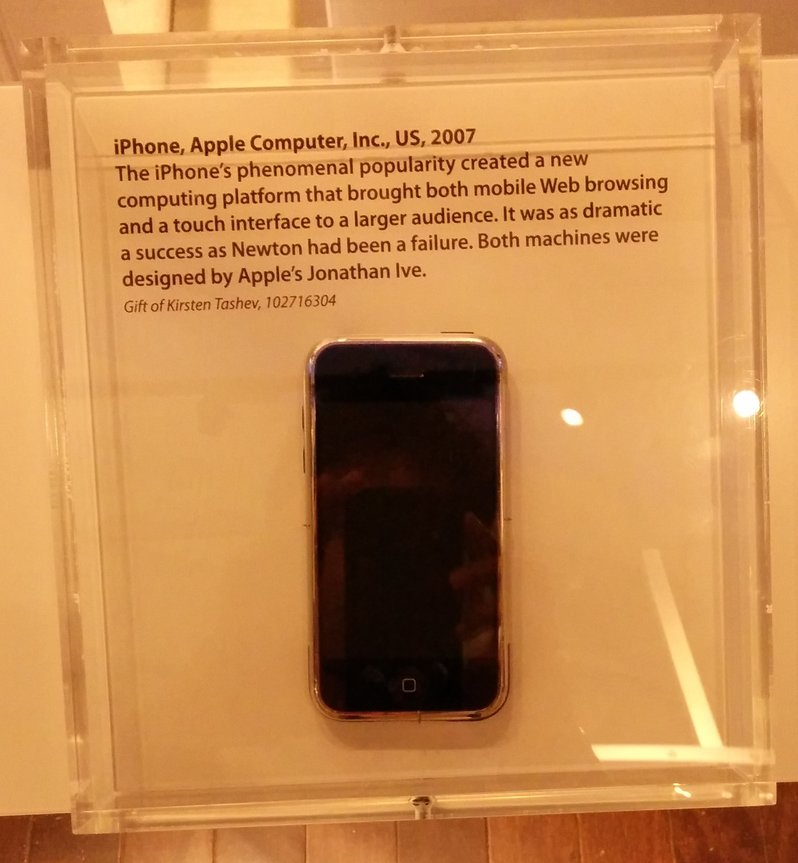
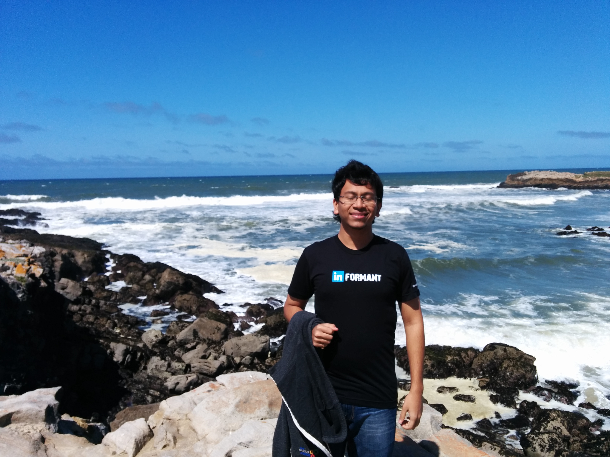

Last week I visited San Francisco. The Melange team, of which I am a member - decided to host Q2 All Hands in Google San Francisco. Most of the time I spent there was to make the build greeeeeen. The later half of the week was focussed towards migrating the Melange Buildbot from AWS to GCE and making it stronger.
Why, you may ask ? Well, the reason is that we get GCE for free ! One of the team members of Melange is also a full time employee in Google Computer Engine team, and it made us immensely happy when he spawned a 30 gigs, 16 core instance on GCE and said “All the cores are belong to us” ! Actually Melange, being a part of Google Open Source Programs Office gets all the computation resources from Google for free.
All in all it was a really fun(read: productive) week. Got to visit the Computer History Museum in Mountain View, which houses the working Difference Engine! Also, I found out that my current cell phone (which is a really old iphone) was also placed in the museum. Nothing has made me feel more ancient ever.
Also got a chance to visit a few cool restaurants - particularly Cafe Europa which makes the best schnitzel I’ve ever had; and Bask which has a really good collection of tapas on their menu.
Another reason for my travel was that I told LinkedIn guys that I’d be in the bay area and they invited me over to give more insights into two recent security vulnerabilities I exposed in LinkedIn. Also, they knew from the interviews etc. when I was interviewing for a Data Scientist internship at LinkedIn. I would have loved to talk about the vulnerabilities, but unfortunately as long as the fix isn’t released, I am not allowed to speak about it.
But the team was very nice,gave me the campus tour, I also got a chance to have dinner with the data security team ! I also spoke to some of the team members about my current research interests, side projects and stuff. I was tee-shirtified for my reporting security vulnerabilities !. It’s really a cool tee shirt that reads “Informant”, but you would not want to wear it through airport security as I did.
Also, one of the awesomest people I’ve had a chance to meet, Harsh gave me a book called Programming Collective Intelligence by Toby Segaran. It’s a great book for anyone who wishes to gain more hands on experience with classic Information Retreival problems like - Search, classifiers, recommendation engines and so on.
There was a time when I was worried about internships and where my life was headed, and Harsh said -
You should be disappointed only when your model breaks and your coefficients do not swing in the way you want. Everything else is tedium.
This is something that I’ve tried to remember, but I tend to forget.
The best aspects of going to hackathons, meetups, geekups is that you get to meet like-minded awesome people. This trip gave me a chance to meet and work with Carol, Stephanie and Cat - people who manage programs like Google Summer of Code, and Google Code In. One definite thing to learn from such people is the way they are able to function effectively and break larger problems into smaller and doable chunks.
Looking forward to work with LinkedIn in coming summers and continue working with the Google Open Source Programs team.
Comments